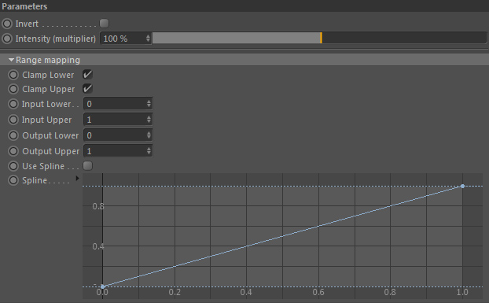

Parameters
Parameters

Invert
Inverts the final result. This happens after Range Mapping.
Intensity (multiplier)
The global intensity of this constraint.
Parameters::Range Mapping
The following settings allow to remap the result of the constaint.
Clamp Lower
Clamp the constraint result (before mapping happens) to Input Lower.
Clamp Upper
Clamp the constraint result (before mapping happens) to Input Upper.
Input Lower
The minimum value to input into the range mapper.
Input Upper
The maximum value to input into the range mapper.
Output Lower
The minimum value to output.
Output Upper
The maximum value to output.
Use Spline
Use the spline graph for custom mapping. If unused it will be automatically remapped linearly.
Spline
Only available if 'Use Spline' is activated
The spline graph controlling the remapping (between Output Lower and Output Upper).